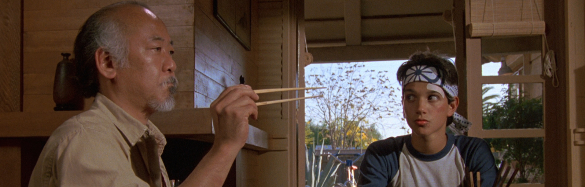

Compare versions
Globe version
Ribbon version
G. Burch Fisher
Earth science & environmental research
Research
Publications
Data, Code, & Visualizations
News
Teaching
Contact
Teaching / Learning in the classroom & field
Teaching

Classes taught